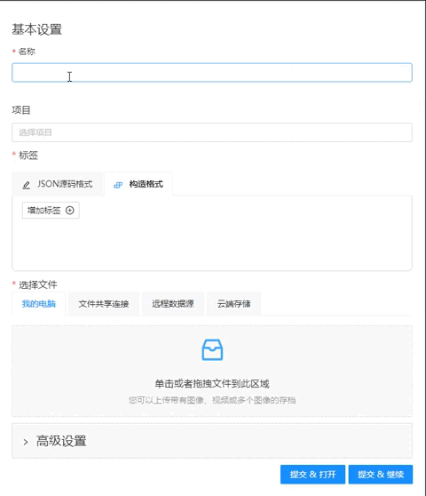

本节包含基础信息，并链接到快速入门所需的部分。
开始使用
要创建任务，请转到任务部分。点击创建一个新任务进入任务创建页面。
设置未来任务的名称。
使用构造格式设置标签:首先单击增加标签，然后输入标签的名称并选择颜色。

你需要上传图片或视频，以便将来注释。要做到这一点，只需拖放文件。
想了解更多信息，请访问 创建标注任务
标注
基础
点击提交 & 打开创建成功后会自动打开任务,点击提交 & 继续会继续停留继续创建任务
进入任务页面后，在jobs列表中打开指向该作业的链接。
为您的任务类型选择一个正确的部分并开始注释。
| 形状 | 标注 | 插值 |
|---|---|---|
| 矩形 | 形状模式 (基础) | 轨迹模式 (基础) |
| 多边形 | 使用多边形标注 | 带有多边形的轨迹模式 |
| 多线段 | 使用多线段标注 | |
| 点 | 形状模式中的点 | 单点线性插值 |
| 椭圆 | 使用椭圆标注 | 编辑椭圆 |
导出数据集

-
要下载标注文件，首先必须保存所有更改. 点击
保存按钮或按Ctrl+S快速保存标注. -
保存更改后，单击
菜单按钮。 -
然后点击
导出数据集按钮。 -
最后选择数据集的格式. 导出格式可从支持的格式列表中获得.
要了解更多信息，请访问导出/导入数据集 部分.